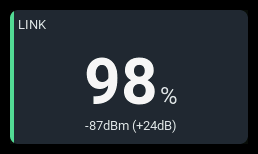
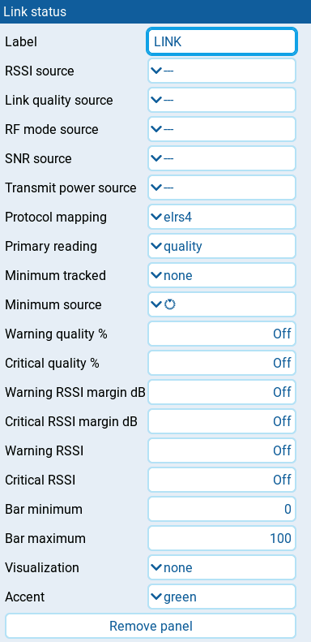

Link status
| 1x2 | 2x1 | 2x2 |
|---|---|---|
 |
 |
 |
Shows measured link quality or RSSI, link freshness, and optional RF details. Link quality is never inferred from RSSI. The panel does not calculate an aggregate health percentage or issue voice or haptic alerts.
Settings

| Setting | Default | What it does |
|---|---|---|
| Label | LINK | Panel heading. |
| RSSI source | RSSI | Signal-strength source, such as RSSI or receiver-side 1RSS. |
| Link quality source | none | Measured link-quality source, such as receiver-side RQly. Quality alarms require a source reporting percent. |
| RF mode source | none | RF mode source, such as RFMD. Enables rate decoding and margin calculation with Protocol mapping set to elrs4. |
| SNR source | none | Optional signal-to-noise reading, such as RSNR. It does not trigger alarms. |
| Transmit power source | none | Optional transmit-power reading, such as TPWR. It does not trigger alarms. |
| Protocol mapping | generic | generic preserves source units and the raw RF mode. elrs4 decodes ExpressLRS 4.x RF modes and estimates RSSI margin above nominal receiver sensitivity. |
| Primary reading | auto | rssi or quality selects the headline. auto prefers available quality, including a retained stale reading, and falls back to RSSI. |
| Minimum tracked | none | none shows the other reading as supporting detail. source shows an EdgeTX minimum; flight shows the dashboard's session minimum. |
| Minimum source | automatic | Explicit EdgeTX minimum source for Minimum tracked set to source. With none selected, uses the tracked source's minimum, such as RSSI-. |
| Warning quality % | Off | Low-quality warning threshold, 0 to 100 percent. Steps of 1. Requires Link quality source. |
| Critical quality % | Off | Low-quality critical threshold, 0 to 100 percent. Steps of 1. Requires Link quality source. |
| Warning RSSI margin dB | Off | Low-margin warning threshold, 0 to 60 dB. Steps of 1. Requires Protocol mapping set to elrs4, RSSI source, and RF mode source. |
| Critical RSSI margin dB | Off | Low-margin critical threshold, 0 to 60 dB. Steps of 1. Requires Protocol mapping set to elrs4, RSSI source, and RF mode source. |
| Warning RSSI | Off | Low-RSSI warning threshold in the source's units, −130 to 100. Steps of 1. Requires RSSI source. |
| Critical RSSI | Off | Low-RSSI critical threshold in the source's units, −130 to 100. Steps of 1. Requires RSSI source. |
| Bar minimum | 0 | Primary-reading value at which the bar is empty, in the source's units. Steps of 1. |
| Bar maximum | 100 | Primary-reading value at which the bar is full, in the source's units. Steps of 1. |
| Visualization | bar | bar shows the primary reading's level; none hides it. |
| Accent | green | Color used for the normal state: cyan, green, amber, or orange. Alarm and stale states use the shared state colors instead. |
The six alarm thresholds start at Off; step below the lowest value to turn one off again. Each critical threshold must be less than or equal to its warning threshold.
Behavior
Link quality shows packet reception; RSSI shows signal strength, with less-negative dBm values indicating a stronger signal. Both sources remain active regardless of Primary reading. The other reading or the selected minimum appears as supporting detail where space permits.
With Protocol mapping set to elrs4, live RSSI and RF mode readings can show the RF rate and estimated signal margin. RSSI must be nonpositive and reported in dB or dBm, and RF mode must be a recognized, unitless value. Margin is headroom above nominal receiver sensitivity, not a guaranteed failsafe boundary. Dual-band modes and unavailable or stale inputs show no margin. Use generic for other protocols, including ExpressLRS 3.x.
All thresholds trigger at or below their value. The most severe live alarm wins, with critical ahead of warning. Equal-severity conditions prefer RSSI, then link quality, then margin. Link-down takes precedence over alarms. Link-quality thresholds only apply to a source reporting percent.
Minimum tracked set to source reads EdgeTX's own minimum, which EdgeTX resets on its own schedule. Minimum source overrides the automatic source. flight resets the minimum when the model's armed condition becomes active, tracks fresh readings while armed, and retains the result after disarming. Set Arm switch in AeroGrid → Model settings. Changes save automatically. Before model arming is saved, a legacy layout session switch remains in use. With no arm switch configured, it tracks one open-ended dashboard session instead. The tracked source is RSSI source when Primary reading is rssi; otherwise it is Link quality source, falling back to RSSI source when no quality source is selected. It does not switch with the automatic headline.
The Session reset switch clears AeroGrid's flight-session minima on every dashboard, not EdgeTX's source minima.
States
| Condition | Presentation |
|---|---|
| Live readings, no crossed thresholds | Measured value and normal accent. |
| Low link quality, RSSI, or margin | WARN or CRIT badge, state color, and the cause where supporting text fits. |
| Link down after the primary has received data | NO LINK headline without a unit, critical state, and empty bar. |
| Link down before the primary has received data | Unavailable state rather than a critical alarm. |
| Stale primary source | Last reading retained and STALE; an independent live warning or critical alarm can take precedence. |
| Primary source not recognized | N/A reading and badge, empty bar. |
| Primary source waiting for data or not selected | -- reading and N/A badge, empty bar. |
| Minimum unavailable | MIN -- or a shorter form where supporting detail fits. |
| Valid zero while live | Measured zero, not an unavailable sentinel. |